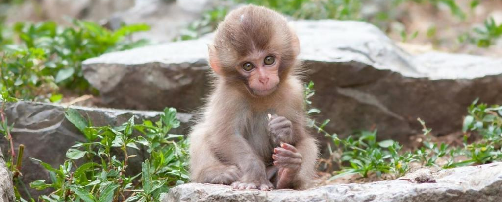

Страница об обезьяне
Обезьяны — наиболее развитые из братьев наших меньших. Конечно, не все они одинаковы — видов обезьян очень много, и далеко не все из них относятся к человекоподобным. Тем не менее, орангутаны, например, вполне могут быть обучены множеству самых разнообразных вещей. Учёные пришли к выводу, что мозг этой обезьяны по уровню своего развития примерно соответствует мозгу трёхлетнего ребёнка.
Видео про обезьян
Звуки обезьян
Памятник обезьяны
Интересные факты про обезьян
- Человекообразные обезьяны могут пользоваться примитивными орудиями труда, например, чтобы расколоть орех, они кладут его на камень, а сверху ударяют другим камнем. Также, чтобы полакомиться муравьями, они втыкают палку в муравейник, а когда вытаскивают, то на ней уже много аппетитных насекомых. Они даже научились делать подобие копий — заостряя зубами длинные палки и охотясь с их помощью. Также с помощью палки они научились мерить уровень воды. Самцы некоторых видов обезьян (например, шимпанзе) могут лысеть
- Самцы некоторых видов обезьян (например, шимпанзе) могут лысеть так же, как и люди. Впрочем, могут и не лысеть.
- Основное различие между человекообразными и обычными обезьянами — отсутствие или наличие хвоста соответственно.
- Так как обезьяны больше всего похожи на человека, то их нередко запускали в космос. В разное время разными странами в космос было запущено 32 обезьяны (см. интересные факты о космосе).
- Обезьяны — немногие из животных, которые видят свое отражение в зеркале и понимают, что это они и есть.